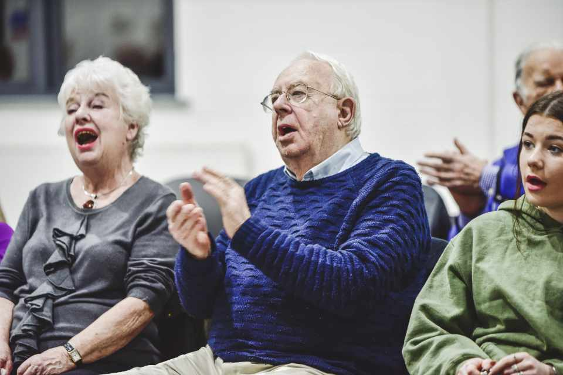

Donate to oldage home of 20 poor oldage people in India
Project background
Poor old aged people undergoing great difficulties lacking & logging in love and affection and always are into mental stress, strain, for this reason, we started "OldAge Home for Poor Elders" with humanity and service to cater to the needs of such unfortunate elders. In Oldage Home, 20 old aged people are living and getting food, shelter, love, proper care, and other basic needs. We sponsor elders boarding & lodging facilities with breakfast, lunch, dinner, Medical care, T.V for recreation.
Challenge
Due to poverty, family disputes, endemic diseases & poor maternal health care, all are contributing to turning a large number of old aged persons into impoverished every year. There is a comprehensive and prominent lacking of health, nutrition, & caring services for indigenous old aged persons. Many elderly women in India suffer from poverty, isolation, and social exclusion. Our study results reveal that we need free old age homes for destitute elderly people who are neglected by the families. The timely food sponsorship and shelter, daily needs are main challenges. We depend on online donations from individuals and corporate to feed and help health care support.
Solution
Our oldage home is a good environment for poor Senior Citizens. "A Happy Home" for "Destitute Elders" and make the aged feel happy & secure admirable, affectionate serving. Old Age Home offers a safe, hygienic & comfortable living for 20 elders.
We sponsor food & clothes with donations for the 20 elderly aged 60 to 90yrs. After the home support, they are free of the feeling of isolation. They are now with a group in the home with happiness in sharing their thoughts and problems with each other. Elderly persons need food, shelter, healthcare, recreation for their stay to have a dignified life in the old age home. Donate generously for their well being towards remaining life.
Sponsor an elder in India to feed hungry senior citizen in our old age home.
Long-Term Impact
The impact of elderly home, old aged from poverty, dispute families are having a peaceful life through their physical, emotional, social development. Home helps senior citizens throughout the year in serving their daily needs. This project reduces "Hunger Deaths". Our project helps 20 elderly women with food & shelter. Through the provision of meals, health supplements, old age women are able to lead healthier lives. In the old age home, elderly women mobilized & improving their confidence levels on their lives without depending on their kith and kin.
Sponsor a poor oldage person for one month – Rs.5000/-
(breakfast, lunch, dinner, healthcare, shelter, recreation)
Sponsor 20 poor old age persons for one month – Rs.100000/-
(breakfast, lunch, dinner, healthcare, shelter, recreation)
